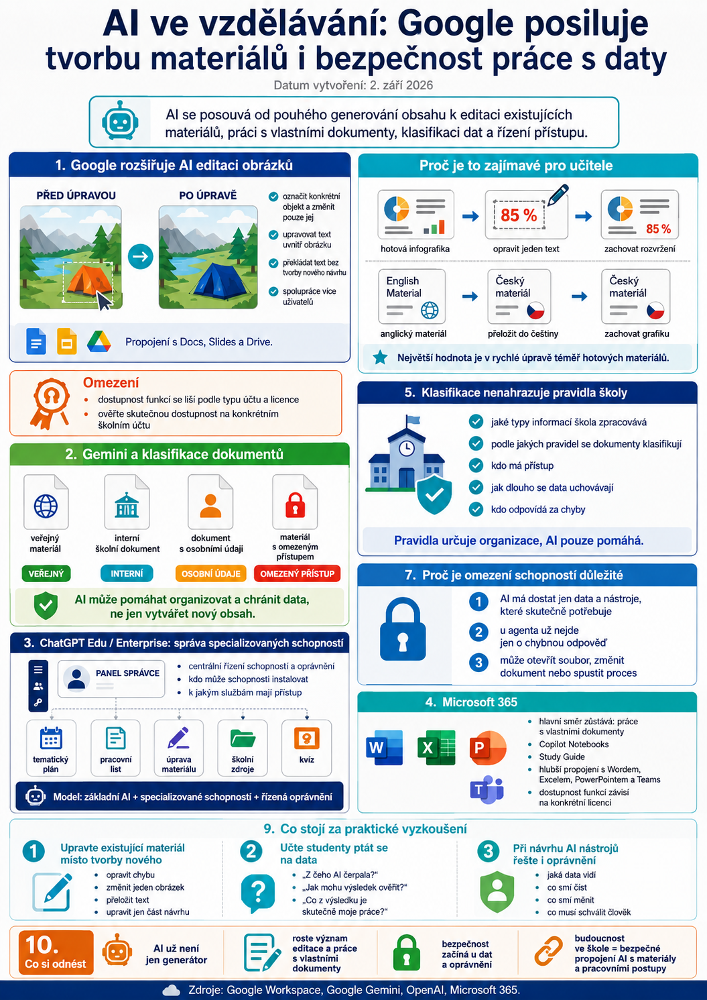

Začátek září nepřinesl revoluci v samotné výuce, ale ukázal, kam se dnešní AI nástroje posouvají: k editaci hotových materiálů, práci s vlastními dokumenty a přesnějšímu řízení přístupu k datům.

Začátek září nepřinesl žádnou revoluci v samotné výuce, ale objevilo se několik změn, které dobře ukazují, kam se dnešní AI nástroje posouvají. Už nejde pouze o generování textu nebo obrázků. Stále větší roli začíná hrát editace existujících materiálů, práce s vlastními dokumenty, klasifikace dat a řízení toho, k čemu má AI přístup.
Google rozšiřuje možnosti AI editace obrázků
Google představil nový nástroj zaměřený na generování a především následnou úpravu obrázků pomocí umělé inteligence.
Z pedagogického pohledu není nejzajímavější samotná možnost vytvořit nový obrázek z textového zadání. Podstatnější je možnost upravit pouze určitou část již existujícího vizuálu.
Uživatel může například:
- označit konkrétní objekt a změnit pouze jej,
- upravovat text přímo uvnitř obrázku,
- překládat text bez nutnosti vytvářet celý návrh znovu,
- spolupracovat na jednom návrhu s dalšími uživateli.
Google zároveň počítá s propojením těchto možností s dalšími aplikacemi Workspace, například Docs, Slides a Drive.
Proč je to zajímavé pro učitele
Při tvorbě pracovních listů, infografik nebo prezentací často není problém vytvořit první návrh. Nejvíce času zabere situace, kdy je materiál téměř hotový, ale potřebujeme změnit jedinou drobnost.
Typickým příkladem může být:
Nebo:
Pokud AI zvládne takovou editaci spolehlivě, může být pro učitele výrazně užitečnější než další generátor obrázků od nuly.
Pro projekty zaměřené na tvorbu vlastních vzdělávacích materiálů, například Janinka Studio, je právě tento způsob práce velmi zajímavý.
Omezení
Dostupnost nových funkcí se může lišit podle typu Google účtu a licence. Nelze proto zatím předpokládat, že stejné možnosti budou automaticky k dispozici všem školním účtům Google Workspace for Education.
Před zařazením do pravidelného pracovního postupu je vhodné ověřit skutečnou dostupnost na konkrétním účtu.
Gemini může pomáhat také s klasifikací dokumentů
Méně nápadnou, ale z dlouhodobého pohledu možná ještě důležitější oblastí je využití Gemini při automatické klasifikaci souborů uložených na Google Drive.
Princip je jednoduchý: AI analyzuje obsah dokumentu a může mu podle předem nastavených pravidel přiřadit odpovídající klasifikační označení.
Ve školním prostředí by jednou mohlo jít například o rozlišení dokumentů typu:
- veřejný materiál,
- interní školní dokument,
- dokument obsahující osobní údaje,
- materiál vyžadující omezený přístup.
To je důležitý posun.
AI už nemusí sloužit pouze k vytváření nového obsahu. Může pomáhat také organizovat a chránit informace, které už škola má.
Automatická klasifikace ale nenahrazuje pravidla školy
Zavedení podobných funkcí rozhodně neznamená, že lze správu dat jednoduše „předat AI“.
Škola stále musí vědět:
- jaké typy informací zpracovává,
- podle jakých pravidel se dokumenty klasifikují,
- kdo k nim má mít přístup,
- jak dlouho mají být uchovávány,
- kdo odpovídá za případné chyby.
AI může pomoci klasifikaci provést, ale pravidla musí určit organizace.
Pro školy je to důležitá připomínka: bezpečnost AI nezačíná u chatbotu. Začíná už u toho, jak máme uspořádaná vlastní data.
ChatGPT Edu posiluje správu specializovaných schopností
Další významný trend je vidět také v prostředí ChatGPT Edu a Enterprise.
Administrátoři získávají stále větší možnost centrálně řídit, jaké specializované schopnosti mohou uživatelé používat, kdo je může instalovat a k jakým službám mají přístup.
Vývoj tak směřuje od jednoho univerzálního chatbota k modelu:
Ve školním prostředí je tento model velmi důležitý.
Místo jednoho agenta, který má přístup ke všemu, může vzniknout například několik oddělených schopností:
- práce s tematickým plánem,
- tvorba pracovního listu,
- úprava materiálu podle zadaných potřeb,
- vyhledávání ve školních zdrojích,
- příprava kvízu.
Každá schopnost může mít přesně určeno, k jakým datům smí přistupovat a jaké akce může provádět.
Proč je omezení schopností důležité
Čím více AI dokáže dělat, tím větší význam získává otázka oprávnění.
U běžného chatbotu je největším rizikem často chybná odpověď.
U AI agenta může být problém mnohem větší, protože systém může:
- otevřít soubor,
- změnit dokument,
- použít informace z jiné služby,
- spustit automatizovaný proces.
Proto je bezpečnější princip:
AI má dostat pouze ty schopnosti a data, které skutečně potřebuje ke konkrétnímu úkolu.
To je důležité nejen pro velké komerční platformy, ale také pro vývoj vlastních školních AI agentů.
Microsoft 365: hlavní vývoj pokračuje v již nastaveném směru
U Microsoftu se v posledních dnech neobjevila změna, která by zásadně měnila způsob používání AI ve výuce.
Dlouhodobě ale pokračuje rozvoj Copilotu v prostředí Microsoft 365, zejména práce s vlastními dokumenty, Copilot Notebooks, Study Guide a hlubší propojení AI s Excelem, Wordem, PowerPointem a Teams.
Pro školy používající Microsoft 365 je důležité především sledovat, které funkce jsou skutečně součástí jejich konkrétní licence. Microsoft nové nástroje často zavádí postupně a jejich dostupnost se může mezi jednotlivými organizacemi lišit.
Co stojí za praktické vyzkoušení
Z aktuálních novinek stojí za vyzkoušení především tři oblasti.
1. Upravte existující materiál místo vytváření nového
Pokud máte přístup k novým možnostem AI editace obrázků, nezačínejte prázdným plátnem.
Použijte již hotovou infografiku nebo pracovní list a zkuste například:
- opravit jednu chybu,
- změnit jediný obrázek,
- přeložit text,
- upravit konkrétní část bez změny ostatního návrhu.
Právě tak se nejlépe ukáže, zda nový nástroj skutečně šetří učiteli čas.
2. Naučte studenty ptát se, s jakými daty AI pracuje
Při první práci s AI lze zavést tři jednoduché otázky:
Jak mohu výsledek ověřit?
Co z výsledku je skutečně moje práce?
Taková trojice je pro AI gramotnost užitečnější než memorování desítek univerzálních promptů.
3. Při návrhu AI nástrojů řešte také oprávnění
Pokud škola nebo tvůrce vzdělávacího nástroje začne používat AI agenty, nestačí řešit pouze jejich schopnosti.
Stejně důležité je určit:
- jaká data agent vidí,
- co může pouze číst,
- co může měnit,
- které akce musí potvrdit člověk.
Čím schopnější AI je, tím důležitější tato pravidla budou.
Co si z dnešních novinek odnést
Aktuální vývoj ukazuje zajímavý posun.
První vlna generativní AI byla především o otázce:
„Co dokáže AI vytvořit?“
Nyní se stále více dostáváme k otázkám:
„Co dokáže upravit?“
„S jakými informacemi dokáže pracovat?“
„Jak pozná, které informace jsou citlivé?“
A především:
„K čemu jí dovolíme přístup?“
Pro vzdělávání je právě tento posun velmi důležitý.
Další etapa AI ve školách totiž nebude stát pouze na stále chytřejších chatbotech. Bude stát na schopnosti bezpečně propojit AI s vlastními výukovými materiály, dokumenty a pracovními postupy.
A právě zde se z otázky technologické novinky postupně stává otázka dobrého řízení školy a digitální gramotnosti.
Zdroje: Google Workspace, Google Gemini, OpenAI, Microsoft 365.